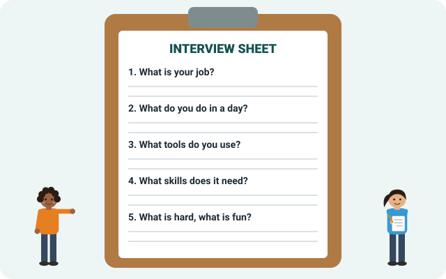
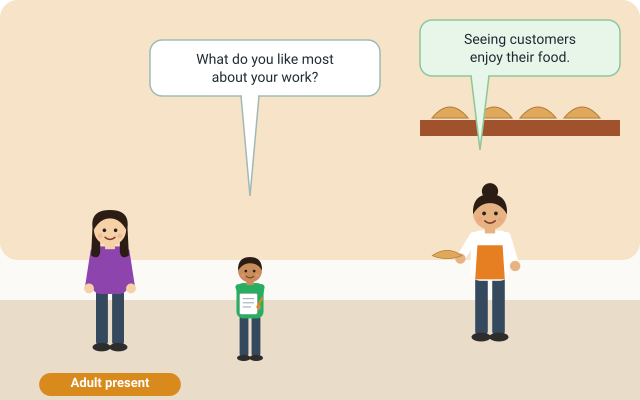
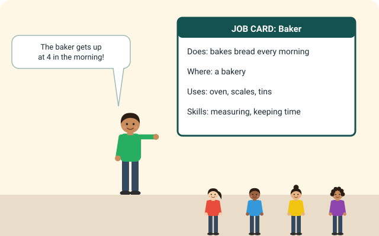

K7 · Self-directed learning and career development › Level 1 Exploring
Interviewing someone about their job
For the adult. Safety rules: read before the child does an interview.
- Only interview people the family knows, or people invited by the school.
- There is always an adult present or sitting nearby. The interview can be by phone, on speaker.
- To take photos or record: ask permission first.
- Do not post photos, recordings or the person's name online without their agreement.
You need: the Interview sheet, a pen, and a blank Job card. Arrange about 15 minutes with the person for the child.
1. Objectives
- Prepare 5 questions and interview a working person, with an adult present.
- Tell others about that job in 2 minutes, using a Job card.
2. Retrieval warm-up
- What are the 3 steps for taking on a task?
- What 2 things must an early warning say clearly?
Answers
- Listen fully, repeat back, write the deadline.
- Which part may be late, and what you need.
3. Explanation
The best way to understand a job is to ask someone who does it. Books and the internet tell you a lot. But only a working person can describe a real working day.
An interview is a conversation you prepare for. Use 4 steps:
Interviewing in 4 steps
- PrepareChoose someone you know, ask an adult to arrange it, write your questions.
- Ask and listenNote the main points, and ask "why?".
- Say thank youThank the person for their time.
- Tell othersMake a Job card, and talk about it for 2 minutes.
Closed and open questions. A closed question only needs "yes" or "no". For example: "Do you like this job?" An open question invites the person to tell you more. For example: "What makes you like this job?" Use lots of open questions.

The 5 questions on the sheet match the 5 boxes of the Job card. Question 5 also tells you how the person feels about their job.
Safety rules for interviews
4. Workplace example
Hypothetical scenario. Owen (age 12) wants to learn about baking as a job. His mum arranges a visit to Mrs Rose, a neighbour who has a bakery, on Saturday afternoon.
Mum sits with Owen. Owen asks the 5 questions on the sheet and notes the main points.

When Mrs Rose says she gets up at 4 a.m., Owen asks: "Why do you have to get up so early?" She explains: the bread must be baked before customers go to work. At the end, Owen thanks her.
At home, Owen makes a "Baker" Job card. The next day, he tells his class about it in 2 minutes:
2-minute talk frame. I interviewed [who], who works as a [job]. Every day, they [what they do]. They use [tools]. This job needs [skills]. What surprised me most was [what].

Why this works: Owen interviews someone he knows, with his mum present. He asks "why" and understands more deeply. Telling it himself helps him remember longer than just rereading the sheet.
5. Practice
Choose an adult in your family: a parent, grandparent, aunt or uncle. Write 5 questions, at least 3 of them open. Interview them for 10–15 minutes, then tell others about it using the 2-minute frame.
Practise first: turn these 2 closed questions into open questions.
- "Do you work with a computer, Dad?"
- "Is your job hard, Mum?"
Hint 1
Open questions often start with: how, why, what, tell me about…
Hint 2
After each interesting answer, ask one more "why?".
Model answer
- "What do you use a computer for, Dad?"
- "Which part of your job do you find hardest, Mum? Why?"
6. Self-check
Choose an answer. Every option has an explanation.
Question 1. Which is an open question?
-
Not quite. This only needs a yes or no answer.
-
Correct. Correct. An open question invites the person to tell you more.
-
Not quite. This usually gets a short answer, like "yes, a long time".
Question 2. You want to interview a working person. Which way is safe?
-
Not quite. Never meet strangers alone. Always have an adult with you.
-
Correct. Correct. This is the lesson's safety rule.
-
Not quite. Do not contact strangers privately online.
Question 3. After the interview, you want to post a photo of the baker online. What should you do?
-
Not quite. You need her agreement before posting her photo.
-
Correct. Correct. A person's photo is their own information.
-
Not quite. People can still recognise her from the photo.
Question 4. After the interview, what helps you remember it longest?
-
Not quite. If you never use it again, you will forget quickly.
-
Correct. Correct. Recalling and telling it yourself helps you remember longer than rereading.
-
Not quite. Rereading helps less than recalling and telling it yourself.
Question 5. Review of Lesson 5. What are the 3 steps for taking on a task?
-
Correct. Correct. These 3 steps help you understand the task and remember the deadline.
-
Not quite. Listening to half makes it easy to do the task wrong.
-
Not quite. Everyone needs to understand their own task clearly.
7. Reflection
The adult asks, and you answer out loud. The site saves nothing.
- Which answer surprised you most?
- Which of the 6 skills from Lesson 2 does the job you asked about need?
8. Real-world application
Over the next 7 days, interview one more person with a very different job from the first. Remember the safety rules. Tell the whole family about it at a meal.
Connecting ideas. The interview sheet matches the 5 boxes of the Job card from Lesson 1. Question 4 lets you check the box 5 you filled in during Lesson 2. You can also ask Lesson 3's question: "Do both men and women do this job?" Arranging an interview time and arriving on time is the promise-keeping skill from Lesson 5.
To learn later, when you are older: the lesson Tell a STAR example (group N2) teaches how to tell the story of something you did.
9. Metadata
| skill | K7 · Self-directed learning and career development |
|---|---|
| level | Level 1 · Exploring |
| group | N1 |
| framework_map | WEF: Curiosity and lifelong learning; CSfW: 1a Manage career and work life; 2a Communicate for work; NACE: Career and Self-Development; Communication; LifeComp: L3 Managing learning (reference only) |
| original | Vietnamese version |
| updated | 2026-11-14 |
Finish the lesson
Mark it as done and the site suggests reviews after 1, 3 and 7 days. The data stays on your device only.
Suggested reviews: